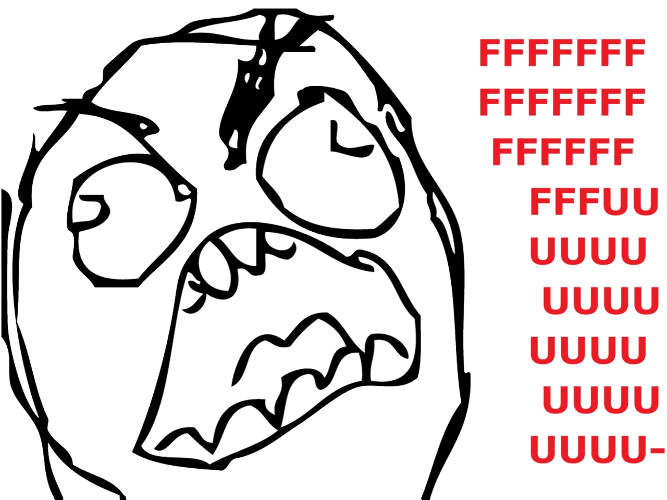

CTFC!*
*Clear the f*cking cache


error_reporting(E_ALL);
init_set('display_errors, TRUE);
init_set('display_startup_errors', TRUE);
¿Poco?
¿Bastante?
¿Mucho?
¿Poco?
He migrado y los archivos ya no se ven
Comprueba los permisos
He migrado y las URLs limpias no van
¿Está mod rewrite activo?
Comprueba el vhost
Comprueba el htaccess
He actualizado y hay cosas que fallan
Actualiza la base de datos
Creo contenido y no aparece en la búsqueda
Configura el cron
Las rutas antiguas siguen accesibles
Instala global redirect
Hay textos que no puedo traducir
Emplea la función t()
Hay enlaces que no se convierten en el Alias
Emplea la función l()
¿Bastante?
He añadido un template nuevo y no se ve
Limpia la caché
Me aparece un error de PHP
Comprueba el watchdog
WSOD*
*White Screen Of Death
Comprueba el error log de Apache
Si no hay log, error_reporting(E_ALL);
Error 500: Internal Server Error
Comprueba el error log de Apache
Trabajando con Features
feature-list (drush fl)
feature-diff (drush fd)
Requiere Diff
feature-revert (drush fr)
feature-update (drush fu)
feature-update (drush fu)
Hice algunos cambios en un archivo y...
Hacked module
MySQL da un error
¿Servidor caído?
¿Servidor inalcanzable?
¿Mucho?
No se que módulo me permite el acceso
Devel node access
Mi sitio va lento
xhprof / xdebug
Devel Query log
Yslow
Monitorización
¿Porqué va lento?
Cuello de botella: MySQL
Cuello de botella: Código
Modulitis
DDoS
Bot DDoS
¿Hora de un upgrade?
Varnish
Memcached
Más máquinas
¡Me han hackeado!
SQL Injections
Cross Site Scripting (XSS)
Ataque a través del sistema
Batch process!
watchdog()
Devel dd()
Drupal 8: Tests
watchdog() no sirve
Usa $this->pass()
Drupal 8: ¿Quién llama a quien?
xdebug
IDE
¿Preguntas?
Usa la barra espaciadora o las flechas para navegar